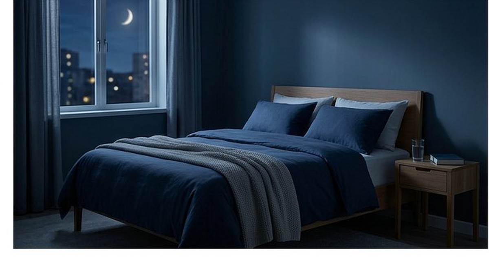

معلومات عامة
حقائق مبسطة عن جسم الإنسان: القلب والعظام والجلد والدماغ
حقائق مدهشة وممتعة عن جسم الإنسان: القلب، العظام، الجلد، الدماغ، والمعدة — معلومات علمية مبسطة تثير الدهشة.
لماذا نحتاج النوم؟ مراحل النوم، فوائده للذاكرة والمناعة، مخاطر الحرمان من النوم، ونصائح علمية لنوم أفضل وأعمق.

الاحتياج يتأثر بالعمر والحالة الصحية والعمل. النصائح العامة لا تعالج الأرق المزمن أو انقطاع النفس أو النعاس الشديد نهارًا؛ هذه علامات تستحق استشارة مختص.
دوّن وقت النوم والاستيقاظ والقيلولة والكافيين والنعاس النهاري. السجل لا يشخّص، لكنه يساعدك والطبيب على رؤية النمط بدل الاعتماد على ليلة واحدة.
نقضي حوالي ثلث حياتنا نائمين، وقد يبدو ذلك «وقتًا ضائعًا» لكن الحقيقة عكس ذلك تمامًا. النوم ليس توقفًا عن الحياة، بل هو أحد أهم الأنشطة البيولوجية التي يقوم بها جسمك، وفيه تحدث عمليات حاسمة لا يمكن أن تحدث في أي وقت آخر.
خلال النوم يمر دماغك بدورات متكررة من مراحل مختلفة: النوم الخفيف، النوم العميق، ومرحلة الأحلام (REM). في النوم العميق يقوم الجسم بإصلاح الأنسجة وتقوية المناعة، وفي مرحلة الأحلام يعالج الدماغ مشاعره وينظم الذكريات. هذه الدورات تتكرر 4-6 مرات كل ليلة.
أثناء النوم، يعيد الدماغ ترتيب ما تعلمته خلال النهار وينقل المعلومات المهمة من الذاكرة قصيرة المدى إلى الذاكرة طويلة المدى. الطلاب الذين ينامون جيدًا قبل الامتحان يتذكرون أكثر من الذين يسهرون للمراجعة.
أثناء النوم العميق ينتج الجسم مواد تقاوم الالتهابات والعدوى. قلة النوم تجعلك أكثر عرضة للإصابة بنزلات البرد والمرض عمومًا، وقد أظهرت الدراسات أن من ينامون أقل من 7 ساعات يصابون بالزكام بثلاثة أضعاف.
الحرمان من النوم يجعل الدماغ أكثر تفاعلًا مع المشاعر السلبية وأقل قدرة على التحكم في الانفعالات. بعد ليلة نوم جيدة، تشعر بالهدوء والقدرة على مواجهة ضغوط اليوم.
النوم ينظم هرمونات الجوع (الجريلين واللبتين)، لذلك يجعلك السهر تشتهي الطعام الدسم. كما أن قلة النوم ترفع ضغط الدم وتزيد خطر أمراض القلب والسكري.
البالغون يحتاجون 7-9 ساعات، والمراهقون 8-10 ساعات، والأطفال أكثر. قاعدة بسيطة: إذا كنت تحتاج منبهًا للاستيقاظ وتشعر بالنعاس نهارًا، فأنت غالبًا لا تحصل على كفايتك من النوم.
النوم ليس وقتًا ضائعًا، بل استثمار في صحتك الجسدية والنفسية والعقلية. اجعل نومك أولوية، وستلاحظ الفرق في تركيزك ومزاجك ومناعتك خلال أيام قليلة. النوم الجيد هو أغلى هدية تقدمها لنفسك كل يوم.
رُوجعت المعلومات العامة في هذا المقال بالاستناد إلى المصادر التالية. الروابط الخارجية قد تُحدّث محتواها بمرور الوقت.
حقائق مدهشة وممتعة عن جسم الإنسان: القلب، العظام، الجلد، الدماغ، والمعدة — معلومات علمية مبسطة تثير الدهشة.
تاريخ القهوة في اليمن: من أصل البن في إثيوبيا إلى زراعته وتجارته في اليمن ودور ميناء المخا في انتشار القهوة عالميًا.
كم عمر الأرض؟ كيف قدر العلماء عمر الأرض بـ 4.54 مليار سنة؟ رحلة عبر الزمن الجيولوجي: نشأة الأرض، الحياة الأولى، الديناصورات، والإنسان.